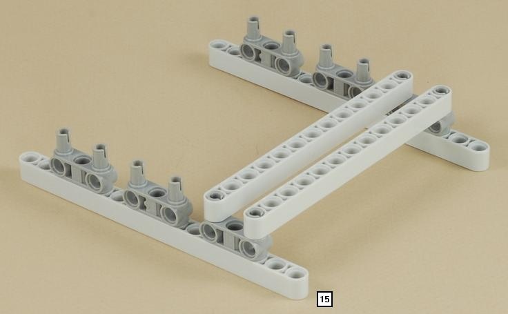
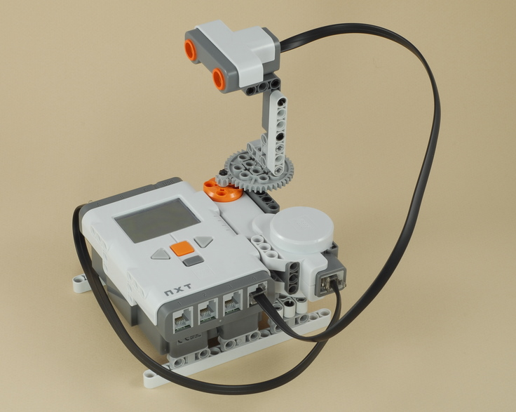
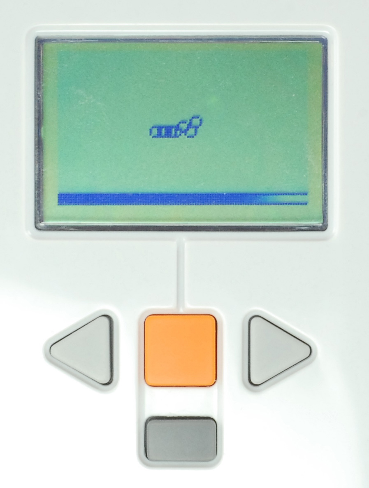
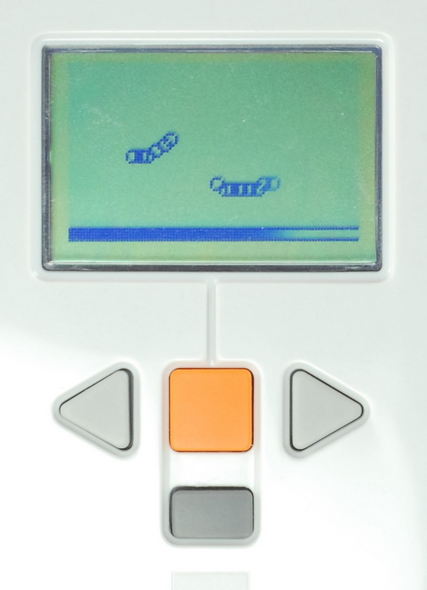

Fun Projects for your LEGO� MINDSTORMS� NXT!
|
|
Fun Projects for your LEGO� MINDSTORMS� NXT! |
| Radar |
|

1

2
3
4
5
6

7
8
| The gear on the bottom of the radar is used to adjust
the angle of the sensor by hand before running the program. |
9
| Attach a wire from the motor to port A on the
NXT brick. Attach a wire from the ultrasonic
sensor to port 4 on the NXT brick. Make sure that this wire is
long enough and will not tangle as the sensor moves back and forth. The
wires as shown here will work fine. |

| Radar Programming Use the program Radar for your Radar. |
|
|  |  | Detected objects are drawn with groups
of little circles on the map, with the distance to the object
represented by the distance of the circles to the progress bar at the
bottom of the display. The progress bar at the
bottom of the display shows which direction the radar is currently
scanning. |
|
One object detected |
Two objects detected |
| Challenge The ultrasonic sensor is not very precise, so objects close to each other will blur together, and some objects reflect the ultrasonic sound better than others. How many separate objects can you position around the radar so that they are detected as different objects? |
|
Copyright
�
2007-2009 by Dave Parker. All rights reserved. |